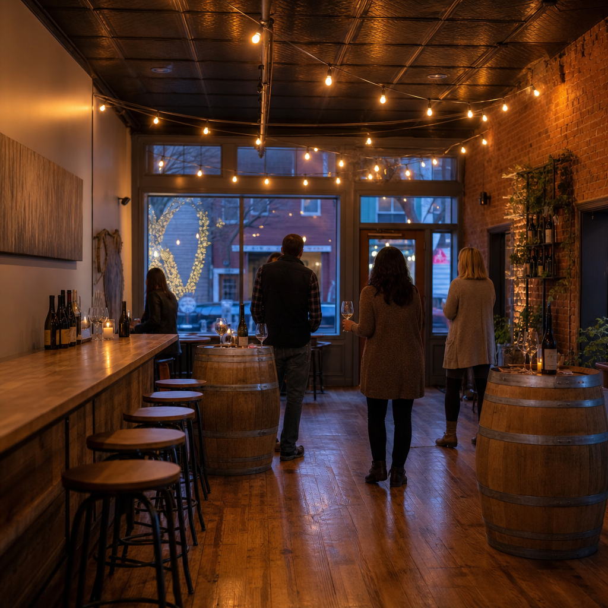

Tara and Dustin
Nearly twenty years ago they started visiting Virginia wineries on weekends. By the mid-2010s they had planted vines. Before they had a winery, they made wine wherever they could, even in the basement.
Vintage after vintage, the hobby became the calling. Tara took on building the family dream; Dustin took to the balance of science and craft in the winemaking. The winery grew from a converted shed on the Nokesville acres to a tasting room on Fitzwater Drive, and the vineyards grew from one site to three.
It is still a small farm winery. The people pouring on a Thursday are the people who pruned in February.
From the winery's own story, told at the bar and on the About page.